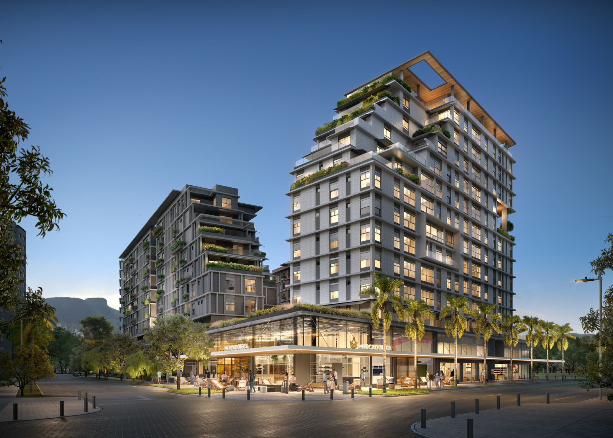

Pedra Branca (Palhoça): Oportunidade de Investimento na Grande Floripa
Pedra Branca, em Palhoça, é como se fosse um país à parte. Tornou-se referência de crescimento na Grande Florianópolis — um bairro totalmente planejado e estruturado onde os novos empreendimentos e a infraestrutura são apenas um detalhe em meio a tanto conceito.
Se você avalia comprar ou investir na região, este texto apresenta o cenário completo, o perfil do bairro e as oportunidades disponíveis.
O Sonho e os Arquitetos
Tudo começou em 1999, quando a família Gomes deu os primeiros passos para transformar uma fazenda de 250 hectares aos pés do Morro da Pedra Branca em algo inteiramente novo. Em 2005, o projeto ganhou corpo com uma visão que rompia com o crescimento desordenado comum às regiões metropolitanas. Inspirados no movimento internacional do Novo Urbanismo, os idealizadores reuniram 11 escritórios de arquitetura, a consultoria do urbanista dinamarquês Jan Gehl, o arquiteto Jaime Lerner e laboratórios da UFSC.
O princípio era construir um lugar onde as pessoas pudessem morar, trabalhar, estudar e se divertir sem precisar cruzar a cidade de carro. O projeto recebeu premiações internacionais e consolidou-se como referência de sustentabilidade urbana na América Latina.
Calçadas Pensadas e a Vida a Pé
Caminhar por Pedra Branca é uma experiência desenhada com respeito às pessoas. As calçadas foram projetadas no mesmo nível da rua, sem degraus ou juntas salientes — deliberadamente pensadas para que qualquer pessoa possa transitar com tranquilidade e conforto. O resultado é que as pessoas fazem tudo a pé: vão ao trabalho, levam as crianças à escola, fazem compras e encontram amigos no Passeio Pedra Branca, tudo sem ligar o motor.
As próprias ruas carregam um toque de cuidado: nomes como Rua dos Hibiscos, Rua das Alamandas, Rua das Violetas, Rua Flor Cheirosa e Rua do Amor-perfeito revelam a atenção aos detalhes. São vias arborizadas, serenas, que convidam a caminhar e dão identidade própria a cada trecho do bairro.
Duas Formas de Viver: Apartamentos Completos e Casas de Alto Padrão
Pedra Branca oferece mais do que moradia em prédios com estrutura completa, áreas de lazer, segurança e comodidade. É também um dos poucos locais da Grande Florianópolis onde é possível encontrar residências de altíssimo padrão em ruas arborizadas e planejadas. Lotes amplos, projetos arquitetônicos assinados, integração com a natureza e privacidade definem um perfil exclusivo que atrai quem busca não apenas um imóvel, mas um endereço.
Neste cenário destaca-se o condomínio Reserva da Pedra — um empreendimento sem paralelo em Santa Catarina. Com praia artificial de areia branca, lagos, bangalôs e milhares de metros quadrados de área verde preservada, reúne estruturas como Casa na Árvore, Horta Comunitária, Espaço de Meditação e trilhas. O Reserva da Pedra representa o mais alto patamar de moradia no bairro e foi reconhecido como o maior case imobiliário da história catarinense.
Parque, Lazer e Qualidade de Vida
O bairro conta ainda com um parque que é referencial de lazer para moradores e visitantes. Espaços abertos, áreas verdes preservadas, equipamentos de convívio e atividades ao ar livre fazem parte do dia a dia. O Passeio Pedra Branca, inaugurado em 2013, funciona como a sala de estar coletiva: calçadas generosas, vegetação abundante, comércio, serviços e eventos ao ar livre reunidos em um único ponto de encontro.
Quatro instituições de ensino formam um eixo educacional consolidado: UNISUL, IFSC Campus Bilíngue, Colégio Bom Jesus e Colégio Visão, reunindo cerca de 8 mil estudantes que circulam pelo bairro diariamente.
Localização Estratégica: Aeroparque e Proximidade com Florianópolis
Pedra Branca beneficia-se de uma localização privilegiada. O Aeroparque Pedra Branca, empreendimento voltado para empresas e desenvolvimento econômico, está na região e reforça o crescimento e a valorização contínua da área. A proximidade com Florianópolis é outro diferencial: acesso rápido à capital, sem os mesmos custos e densidade de bairros mais centrais, tornando o bairro uma alternativa atraente para quem trabalha ou estuda em Floripa mas prefere viver com mais tranquilidade.
Lançamentos que Marcam
A confiança no projeto reflete-se em números impressionantes. Empreendimentos recentes registraram venda total no dia do lançamento — unidades comercializadas em poucas horas. O Reserva da Pedra, por exemplo, teve todas as unidades vendidas no lançamento, consolidando o bairro como um dos mais procurados da região. O metro quadrado atinge patamares que superam bairros tradicionais da capital, atraindo compradores de todo o Sul do país.
Para Quem Serve?
- Quem busca primeiro imóvel ou upgrade encontra bom custo-benefício e o diferencial de viver em um bairro planejado, com qualidade e infraestrutura pronta.
- Investidores veem valorização consistente em lançamentos e unidades prontas, com margens comprovadas e alta absorção do mercado.
- Famílias escolhem o bairro por segurança, escolas de renome e espaços de convívio onde rotina, escola e lazer conectam-se a pé.
- Quem busca exclusividade encontra no Reserva da Pedra e nas residências de alto padrão um patamar raro na Grande Florianópolis.
Oportunidades Disponíveis
Há opções na planta e unidades prontas para morar. Em lançamentos, avalie construtora, prazo e índice de reajuste. Em unidades prontas, foque em conservação, perfil do condomínio e liquidez de revenda. Uma opção em destaque é o Pátio das Artes, com apartamentos de 3 dormitórios e suíte, pronto para morar e integrado à estrutura completa do bairro.
Conheça detalhes do Pátio das Artes: Apartamento com 3 dormitórios e suíte no Pátio das Artes — Pedra Branca/Palhoça.
Pedra Branca é um endereço para quem busca conceito, sofisticação em detalhes de viver o presente na melhor forma — desfrutando do requinte e da simplicidade de não só estar, de ser.
— Flávia Capacia, corretora especialista na região
Fale Comigo
Posso apresentar opções atuais em Pedra Branca, incluindo Pátio das Artes, Dubai Residence, Reserva da Pedra e outros empreendimentos, de acordo com seu orçamento e prazo. Fale comigo e vamos encontrar a oportunidade certa para você.